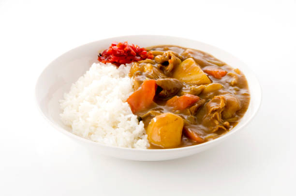

Japanese Curry

Japanese Curry by Just One Cookbook
Description
Delicious Japanese chicken curry recipe for a weeknight dinner! Tender pieces of chicken, carrots, and potatoes cooked in a rich savory curry sauce, this Japanese version of curry is a must-have for your family meal.
This may come as a surprise, but Japanese Curry aka Curry Rice is an exemplary comfort food and one of the most-loved home-cooked dishes in Japan.
The bite-sized chunks of meat, the thick-cut vegetables, the rich and creamy brown curry sauce, and the fluffy rice are what makes every bite so comforting and exciting to eat. Not only is it a meal that's easy to make on busy nights, but it also tastes better the second day.
So if you wish to master Japanese home cooking, you'll need to add Japanese curry to your repertoire. Let me show you how to make Japanese Chicken Curry (チキンカレー) today!
Ingredients:
- 1.5 lb boneless, skinless chicken thighs
- 1/4 tsp kosher salt (Diamond Crystal; use half for table salt)
- freshly ground black peper
- 2 carrots
- 2 onions
- 3 Yukon gold potatoes (sub with cauliflower)
- 1 knob ginger
- 2 cloves garlic
- 1/2 apple
- 1.5 tbsp neutral oil
For the Curry
- 4 cups Chicken Stock/Broth
- 1 tbsp honey
- 1 tbsp soy sauce
- 1 tbsp ketchup
- 1 package Japanese curry roux
- 2-4 tsp kosher salt
For Serving
- 8 servings cooked Japanese short-grain rice
- fukujinzuke (Japanese red pickled vegetables)
Steps:
- Cut the onions into wedges. I like to have the texture of the onions in my curry, so I cut them into thick wedges. If you prefer, you can mince or thinly slice the onions so they disintegrate into the sauce.
- Peel the carrots and cut them into rolling wedges (it's called rangiri in Japanese). This type of cut creates more surface area, which helps the carrots absorb more flavor and cook faster.
- Peel the potatoes. Cut each potato into quarters (6 pieces for russet potatoes). Soak them in water for 15 minutes to remove excess starch.
- Grate the ginger. You will need 1 tsp of grated ginger, including the juice. Mince the garlic and set aside.
- Cut the apple into quarters, remove the core, and peel the skin.
- Grate the apple.
- Cut off the extra fat from the chicken and discard it. Then cut the chicken into bite-sized pieces.
- Heat the oil in a large pot over medium heat and add the onion.
- Sauté the onions, stirring occasionally, until they become translucent and tender, about 5 minutes.
- Add the minced garlic and grated ginger and mix well together.
- Add the chicken and cook, stirring frequently, until it's no longer pink on the outside. If the onions are getting too brown, reduce the heat to medium low temporarily.
- Add the chicken stock.
- Add the grated apple, honey, soy sauce, and ketchup (or any condiment you choose to add).
- Add the carrots and potatoes. The broth should barely cover the ingredients. Don't worry; we don't want too much liquid here, and additional liquid will be released from the meat and vegetables.
- Simmer, covered*, on medium-low heat for 15 minutes, stirring occasionally. *Simmer uncovered if the ingredients are completely submerged in the broth.
- Continue to cook covered until a wooden skewer goes through the carrots and potatoes.
- Turn off the heat. Put 1-2 cubes of roux in a ladleful of cooking liquid, slowly let it dissolve with a spoon or chopsticks, and stir into the pot to incorporate. Repeat with the rest of the blocks, 2 cubes at a time.
- Simmer, uncovered, on medium-low heat, stirring frequently, until the curry becomes thick, about 5-10 minutes. If your curry is too thick, you can add water to thin the sauce. When you stir, make sure that no roux or food is stuck to the bottom of the pot; otherwise, it may burn.
- Serve the curry with steamed Japanese short-grain rice on the side. If you like, garnish with fukujinzuke.